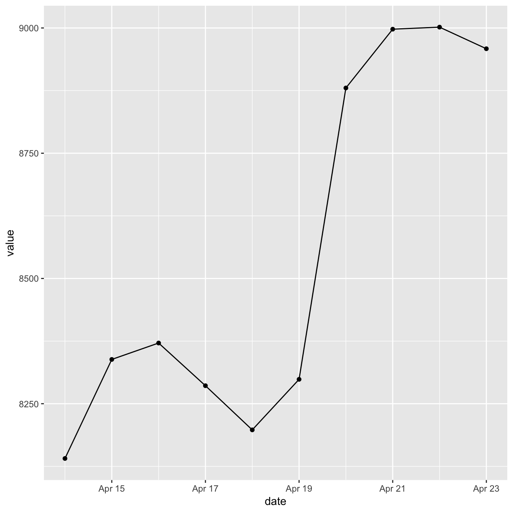
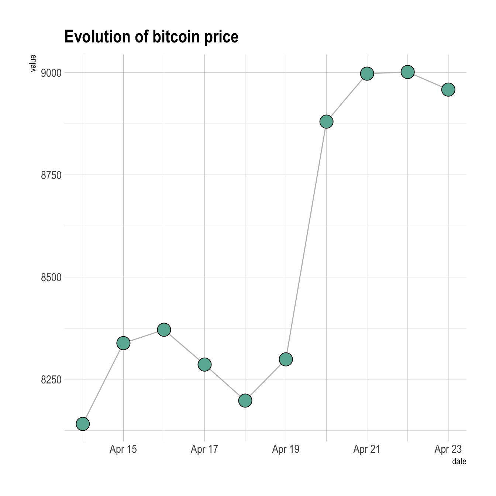
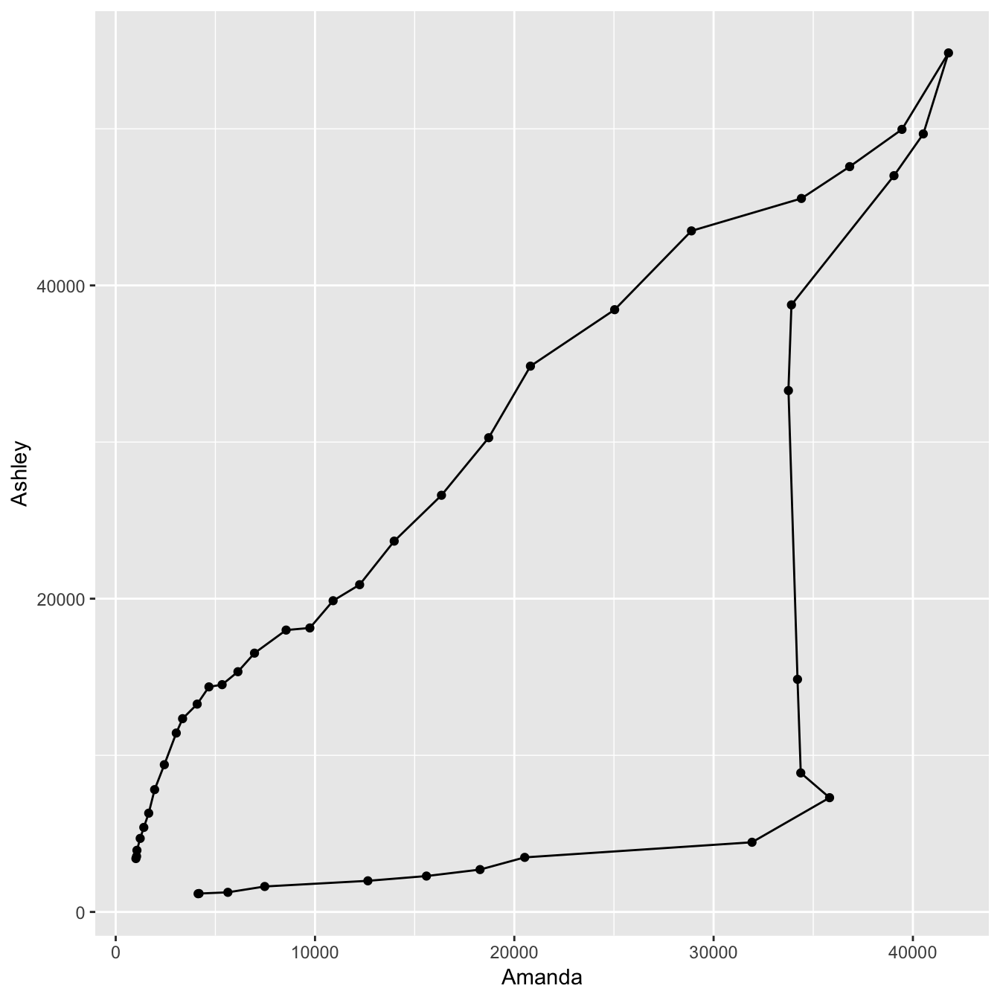
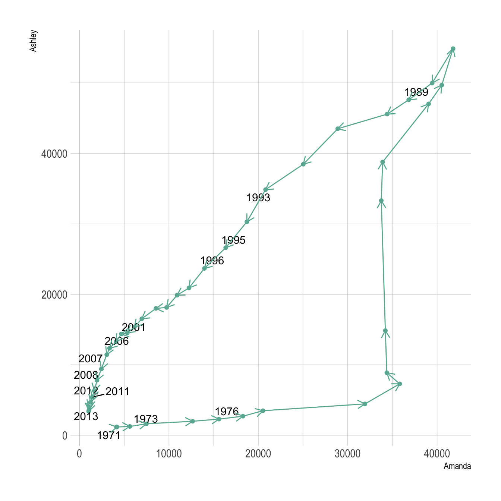

Related chart types

Scatter

Heatmap

Correlogram

Bubble

Connected scatter

Density 2d
This post explains how to build a basic connected scatterplot with R and ggplot2. It provides several reproducible examples with explanation and R code.
geom_point() and geom_line()A connected scatterplot is basically a hybrid between a scatterplot and a line plot. Thus, you just have to add a geom_point() on top of the geom_line() to build it.

# Libraries
library(ggplot2)
library(dplyr)
# Load dataset from github
data <- read.table("https://raw.githubusercontent.com/holtzy/data_to_viz/master/Example_dataset/3_TwoNumOrdered.csv", header=T)
data$date <- as.Date(data$date)
# Plot
data %>%
tail(10) %>%
ggplot( aes(x=date, y=value)) +
geom_line() +
geom_point()Custom the general theme with the theme_ipsum() function of the hrbrthemes package. Add a title with ggtitle(). Custom circle and line with arguments like shape, size, color and more.

# Libraries
library(ggplot2)
library(dplyr)
library(hrbrthemes)
# Load dataset from github
data <- read.table("https://raw.githubusercontent.com/holtzy/data_to_viz/master/Example_dataset/3_TwoNumOrdered.csv", header=T)
data$date <- as.Date(data$date)
# Plot
data %>%
tail(10) %>%
ggplot( aes(x=date, y=value)) +
geom_line( color="grey") +
geom_point(shape=21, color="black", fill="#69b3a2", size=6) +
theme_ipsum() +
ggtitle("Evolution of bitcoin price")The connected scatterplot can also be a powerfull technique to tell a story about the evolution of 2 variables. Let???s consider a dataset composed of 3 columns:
The scatterplot beside allows to understand the evolution of these 2 names. Note that the code is pretty different in this case. geom_segment() is used of geom_line(). This is because geom_line() automatically sort data points depending on their X position to link them.

# Libraries
library(ggplot2)
library(dplyr)
library(babynames)
library(ggrepel)
library(tidyr)
# data
data <- babynames %>%
filter(name %in% c("Ashley", "Amanda")) %>%
filter(sex=="F") %>%
filter(year>1970) %>%
select(year, name, n) %>%
spread(key = name, value=n, -1)
# plot
data %>%
ggplot(aes(x=Amanda, y=Ashley, label=year)) +
geom_point() +
geom_segment(aes(
xend=c(tail(Amanda, n=-1), NA),
yend=c(tail(Ashley, n=-1), NA)
)
) It makes sense to add arrows and labels to guide the reader in the chart:

# Libraries
library(ggplot2)
library(dplyr)
library(babynames)
library(ggrepel)
library(tidyr)
# data
data <- babynames %>%
filter(name %in% c("Ashley", "Amanda")) %>%
filter(sex=="F") %>%
filter(year>1970) %>%
select(year, name, n) %>%
spread(key = name, value=n, -1)
# Select a few date to label the chart
tmp_date <- data %>% sample_frac(0.3)
# plot
data %>%
ggplot(aes(x=Amanda, y=Ashley, label=year)) +
geom_point(color="#69b3a2") +
geom_text_repel(data=tmp_date) +
geom_segment(color="#69b3a2",
aes(
xend=c(tail(Amanda, n=-1), NA),
yend=c(tail(Ashley, n=-1), NA)
),
arrow=arrow(length=unit(0.3,"cm"))
) +
theme_ipsum()Related chart types